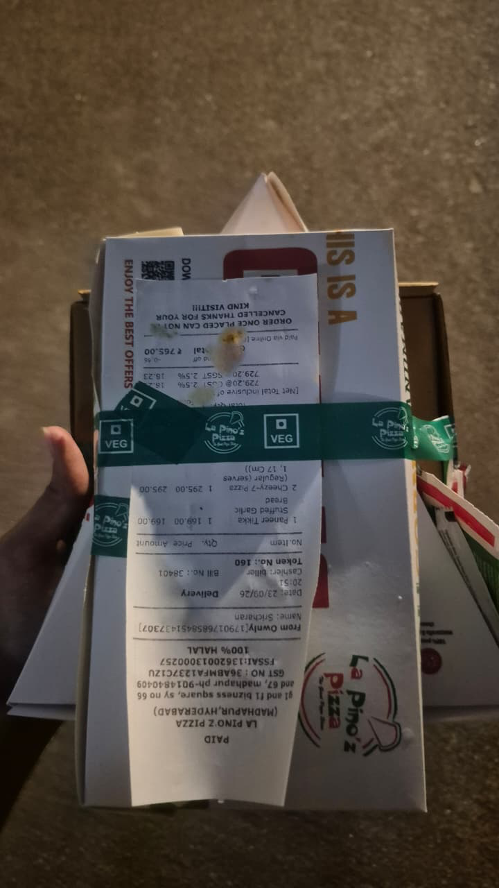
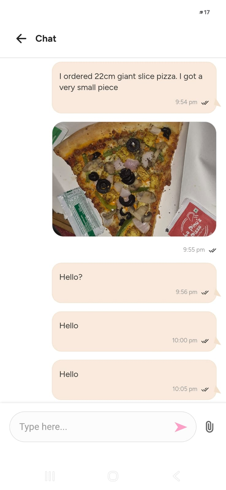
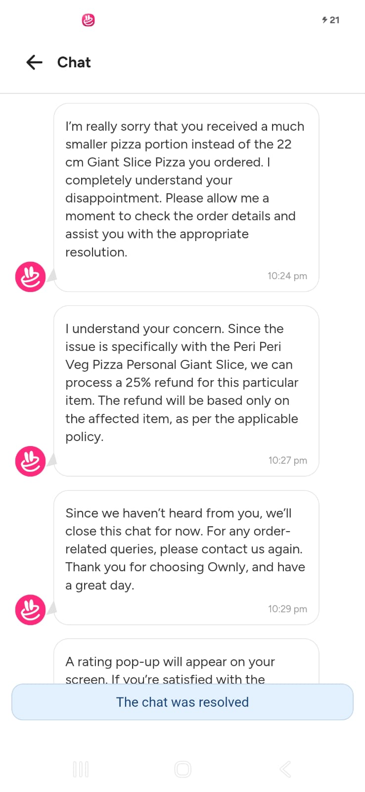
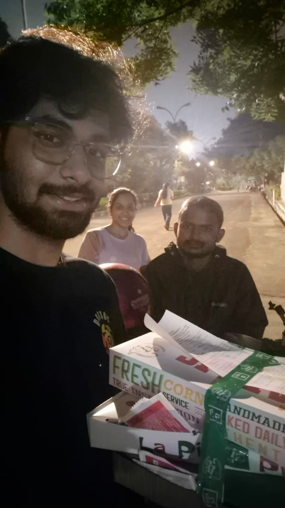
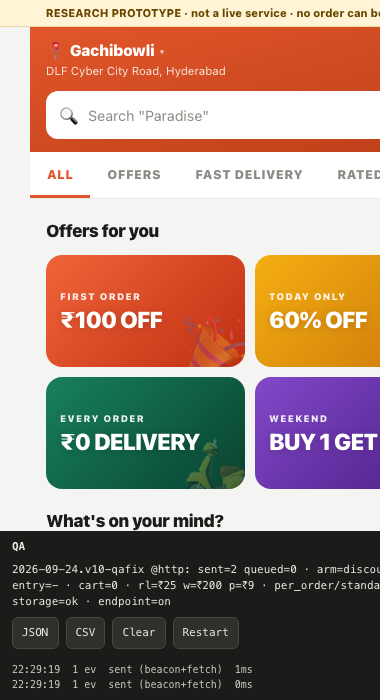
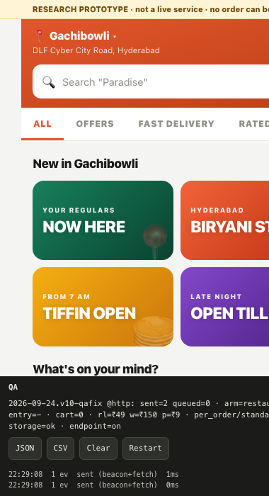

01 · The problem
Ownly is already live here, so the question is not whether to enter. It is which parts of the playbook still work — and what has to change first.
Our survey, Sep 2026. Bengaluru is 16 people — direction, not size.
02 · The control group
Same app, restaurant problem already solved. Awareness converted. Ordering did not.
Four people — counts, not rates. Asked what would bring them back: more offers (2), faster delivery (1), a bigger price gap (1). None said the product.
Exposure lifts repeat intent and Rapido discovery. It does not buy belief in the price.
03 · The KPI system
One north-star and seven drivers. Each one names the instrument that produced it — and the two we cannot compute are stated, not hidden.
04 · The evidence
We could not buy data, so we built it: a survey, a price audit at one address, a working fake app, coded public reviews, and an order we placed ourselves.
Kondapur and Madhapur were options on the form. Nobody picked either.
Every figure in this deck carries its instrument and its base. Small bases are labelled as direction, not size.
05 · Price
The saving is structural, not bought with discounts. That is the strength. It is also one coupon deep.
Four matched baskets, one Gachibowli address, 16 Sep 2026. Directional — four baskets, not a market.
33 people's stated switching price × 4 real baskets = 132 pairs.
06 · The ₹30 equation
Same ₹30, three different answers. The order of these three numbers is the strategy.
40 people, forced binary choices, 95% intervals. The gap is not noise: 24 accepted the wait but refused to lose restaurants; 1 did the reverse.
33 people named a figure; 4 said no amount would move them, 3 didn't know.
07 · The fake door
Not a landing page: eight screens, real menus, a delivery choice, a cart, randomised prices. Choices, not opinions.
Real restaurant names, invented prices, no payment screen, no confirmation. “Placed” means they pressed the button.
Small groups — direction only. An ad interrupts; a tab is a decision already made.
08 · What they paid for
The clearest gap in the study between what people say and what they do when a button is in front of them.
Each person saw one random price. Take-up rose as the price rose — every group under 15 people, so read the shape, not the levels.
42 people reached this screen. All three options carried the same delivery fee.
09 · Claims vs evidence
Survey and desk research made the claims. The fake door made people choose. Four held, one broke, one changed shape.
10 · First-hand
The reviews said orders fail and refunds are a fight. So we bought one and found out.




23 September 2026, La Pino'z via Ownly, delivered to Gachibowli. Food arrived cold, cutlery missing, and the pizza was a fraction of the size ordered.
One order, one complaint. It is not a rate — it is the experience behind the 79%.
11 · Product
Everything here was chosen by someone in the fake door, not by us in a meeting.


Both home screens ran live. The arm comparison itself is not reportable — phones were shared, so the split was 58 to 12.
Each one is a change to a screen, not a slogan.
12 · So what
Price gets attention, and Ownly already has the cheaper bill. Nothing in our evidence says anyone comes back.
| KEEP | Zero commission and no platform fee | Fees are 5.2% of an Ownly bill against a 23.4% incumbent median. Structural — it needs no subsidy to stay true. |
| ADAPT | Go deep on local restaurants, not wide | A missing place lost 53.3% of fake-door orders, and only 35% would trade their restaurants for ₹30. |
| ADD | Paid fast delivery through Rapido | 45.5% paid ₹15–49 for 17 minutes, take-up rising with price. It also uses the one asset rivals cannot copy. |
| ADD | Same-day refund cover, ₹9–39 | Refund failure appears in 79% of app reviews, was the top reason behind payment choices — and we lived it ourselves. |
| DROP | Big first-order discounts and a ₹99 membership | Only 25% would stay after the offer; 3 of the 8 who chose the membership placed an order. Bengaluru's triers left when the offers ended. |